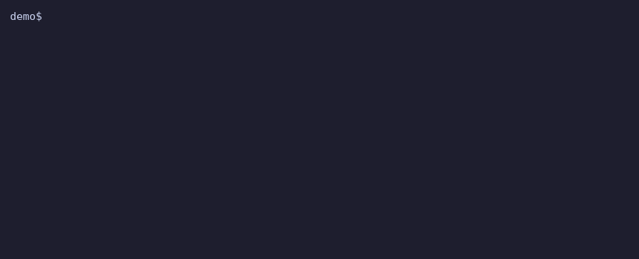

A lightweight AI-first shell: one fast Zsh setup that natively integrates Claude Code, Muse Code, Codex, OpenCode, and pi.dev — with token-usage insights in your prompt, sane window switching, and a clean Starship theme.

curl -fsSL https://nitishagar.github.io/polish/install.sh | bash exec zsh polish doctor
Source: github.com/nitishagar/polish · MIT licensed.